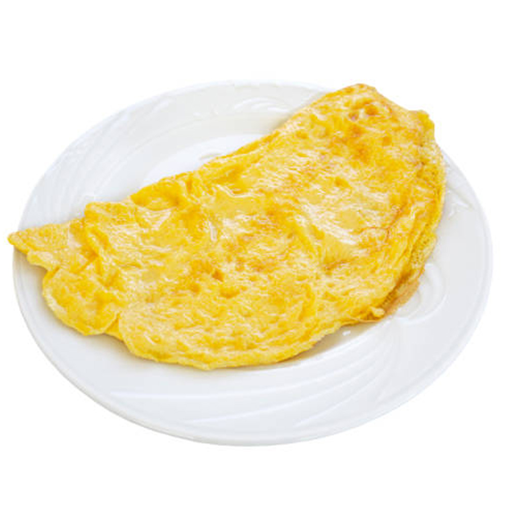

Omelette

Description
A simple dish made from eggs cooked in a pan. It is quick to prepare and perfect for breakfast. You can add cheese or vegetables for more flavor.
Ingredients
- Eggs
- Salt
- Pepper
- Oil
- Cheese or vegetables (optional)
Steps
- Break the eggs into a bowl.
- Add salt and pepper and whisk well.
- Heat oil in a pan.
- Pour the eggs into the pan.
- Cook until set, then fold and serve.
Home